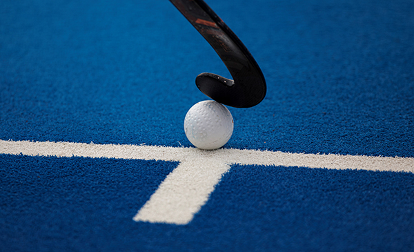
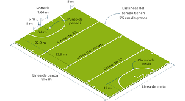
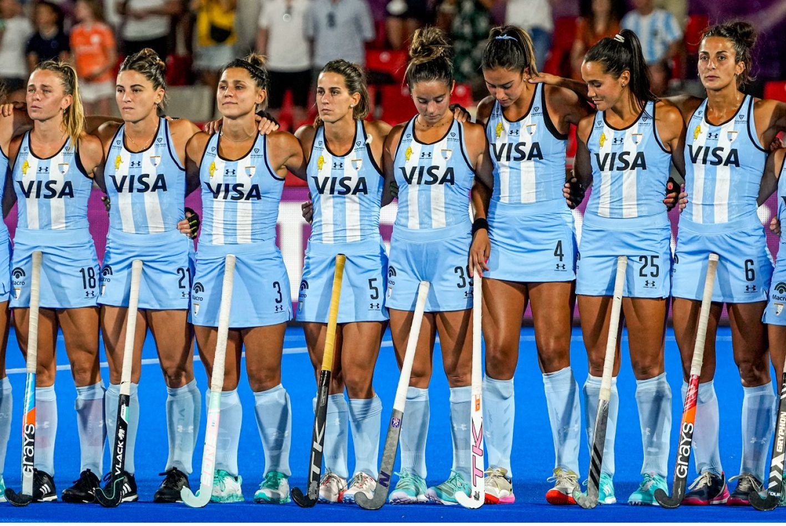

HOCKEY SOBRE CESPED

es un deporte en el que dos equipos rivales de once jugadores compiten para meter una pelota en el arco del equipo contrario. Las acciones se realizan con un palo de hockey que permite controlar la pelota.

El campo de juego es rectangular, de 91.40 metros de largo y 55.00 de ancho. Las líneas laterales delimitan los perímetros más largos del campo; las líneas de fondo delimitan los perímetros más cortos del campo.
REGLAS PRINCIPALES
- El juego se divide en cuatro períodos.
- Cada uno de estos tiempos tiene 15 minutos.
- Para anotar un gol, el jugador atacante debe de lanzar la bola dentro del área.
- El penalty-corner es una falta en la que la bola debe colocarse en la línea de fondo, a unos 10 metros de la portería.
- El jugador que tire el penalty-corner debe tener, al menos, un pie fuera de la cancha y sus compañeros deben permanecer fuera del área.
- Cuando se marca un penal, cinco defensas, como máximo, incluido el portero, pueden estar detrás de la línea de fondo con sus palos.
- El penalty-stroke es una sanción más grave, en la que un atacante lanza la bola desde un punto dentro del área, mientras el portero se coloca en la línea de la portería.
- La bola no puede tocar ninguna parte del cuerpo

En esta foto se aprecia a la selección femenina de hockey sobre césped de Argentina, también conocida como Las Leonas, representa a Argentina en las competiciones organizadas por la Federación Internacional de Hockey y la Federación Panamericana de Hockey.